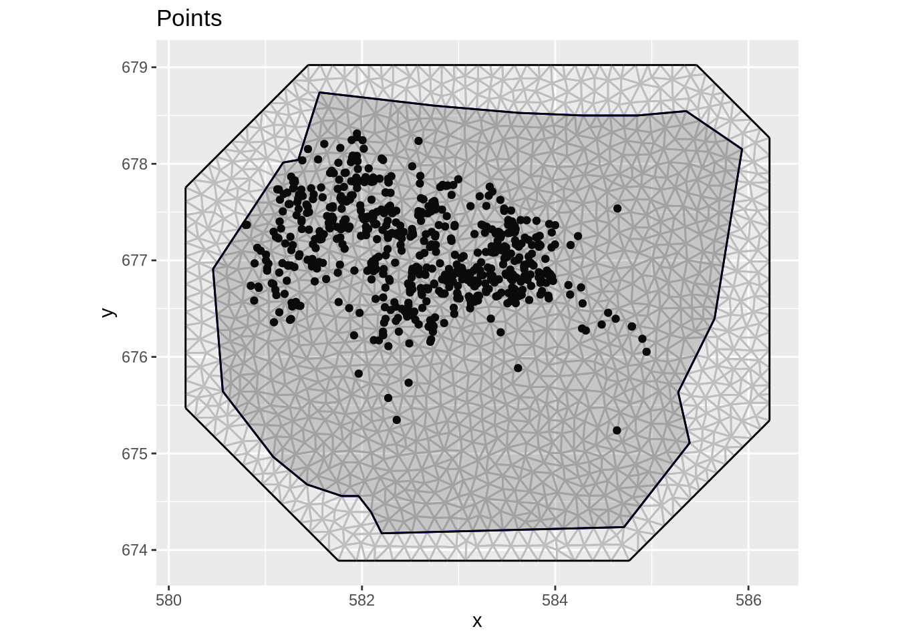
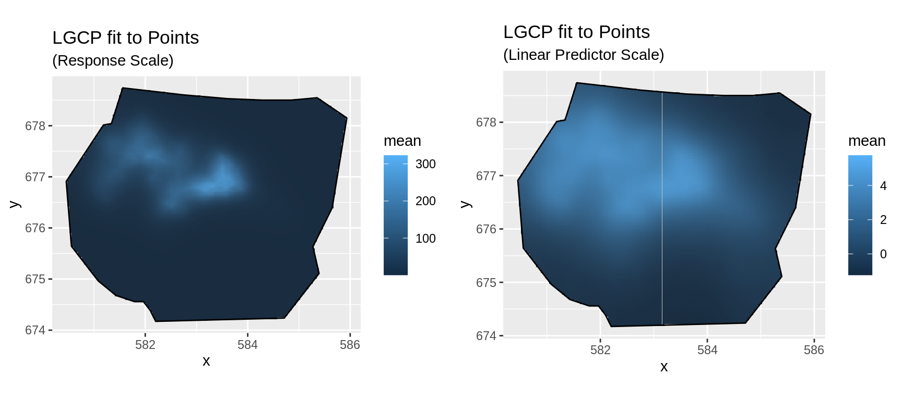
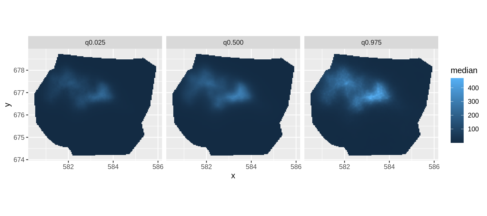
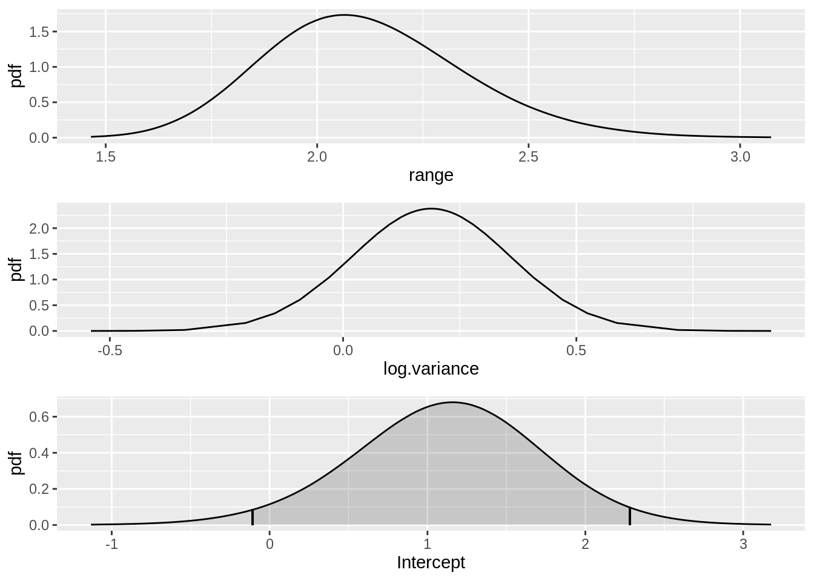
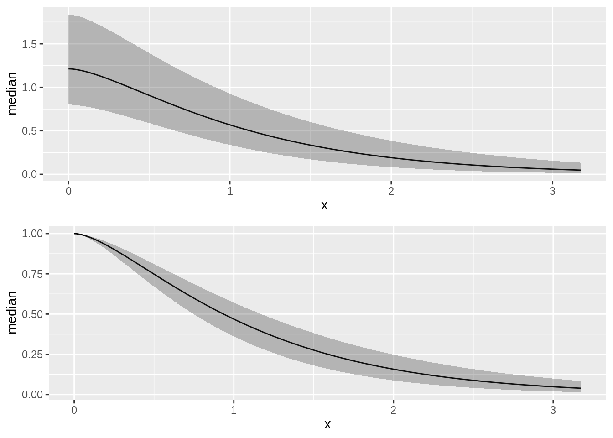
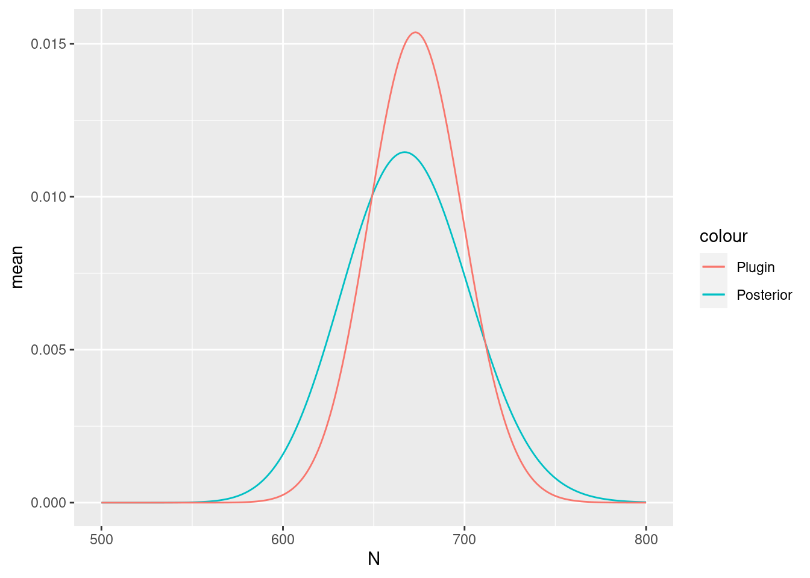

LGCPs - An example in two dimensions
David Borchers and Finn Lindgren
Generated on 2023-04-19
Source:vignettes/web/2d_lgcp.Rmd
2d_lgcp.RmdIntroduction
For this vignette we are going to be working with a dataset obtained
from the R package spatstat. We will set up a
two-dimensional LGCP to estimate Gorilla abundance.
Get the data
For the next few practicals we are going to be working with a dataset
obtained from the R package spatstat, which
contains the locations of 647 gorilla nests. We load the dataset like
this:
data(gorillas, package = "inlabru")This dataset is a list containing a number of R objects,
including the locations of the nests, the boundary of the survey area
and an INLA mesh - see help(gorillas) for
details. Extract the the objects we need from the list, into other
objects, so that we don’t have to keep typing
‘gorillas$’:
nests <- gorillas$nests
mesh <- gorillas$mesh
boundary <- gorillas$boundaryPlot the points (the nests(. (The ggplot2 function
coord_fixed() sets the aspect ratio, which defaults to
1.)

Fiting the model
Fit an LGCP model to the locations of the gorilla nests, predict on the survey region, and produce a plot of the estimated density - which should look like the plot shown below.
Recall that the steps to specifying, fitting and predicting are:
Specify a model, comprising (for 2D models)
coordinateson the left of~and an SPDE+ Intercept(1)on the right. Please use the SPDE prior specification stated below.Call
lgcp( ), passing it (with 2D models) the model components, theSpatialPointsDataFramecontaining the observed points and theSpatialPolygonsDataFramedefining the survey boundary using thesamplersargument.Call
predict( ), passing it the fitted model from 2., locations at which to predict and an appropriate predictor spcification. The locations at which to predict should be aSpatialPixelsDataFramecovering the mesh obtained by callingpixels(mesh).
matern <- inla.spde2.pcmatern(mesh,
prior.sigma = c(0.1, 0.01),
prior.range = c(5, 0.01)
)
cmp <- coordinates ~ mySmooth(coordinates,
model = matern
) +
Intercept(1)
fit <- lgcp(cmp, nests, samplers = boundary, domain = list(coordinates = mesh))Predicting intensity
You should get a plot like that below (the command below assumes that
the prediction is in an object called lambda):
pred <- predict(
fit,
pixels(mesh, mask = gorillas$boundary),
~ data.frame(
lambda = exp(mySmooth + Intercept),
loglambda = mySmooth + Intercept
)
)
pl1 <- ggplot() +
gg(pred$lambda) +
gg(boundary) +
ggtitle("LGCP fit to Points", subtitle = "(Response Scale)") +
coord_fixed()
pl2 <- ggplot() +
gg(pred$loglambda) +
gg(boundary) +
ggtitle("LGCP fit to Points", subtitle = "(Linear Predictor Scale)") +
coord_fixed()
multiplot(pl1, pl2, cols = 2)
You can plot the median, lower 95% and upper 95% density surfaces as
follows (assuming that the predicted intensity is in object
lambda).
ggplot() +
gg(cbind(pred$lambda, data.frame(property = "q0.500")), aes(fill = median)) +
gg(cbind(pred$lambda, data.frame(property = "q0.025")), aes(fill = q0.025)) +
gg(cbind(pred$lambda, data.frame(property = "q0.975")), aes(fill = q0.975)) +
coord_equal() +
facet_wrap(~property)
SPDE parameters
Plot the SPDE parameter and fixed effect parameter posteriors.
int.plot <- plot(fit, "Intercept")
spde.range <- spde.posterior(fit, "mySmooth", what = "range")
spde.logvar <- spde.posterior(fit, "mySmooth", what = "log.variance")
range.plot <- plot(spde.range)
var.plot <- plot(spde.logvar)
multiplot(range.plot, var.plot, int.plot)
Look at the correlation function if you want to:
corplot <- plot(spde.posterior(fit, "mySmooth", what = "matern.correlation"))
covplot <- plot(spde.posterior(fit, "mySmooth", what = "matern.covariance"))
multiplot(covplot, corplot)
Estimating Abundance
Finally, estimate abundance using the predict function.
As a first step we need an estimate for the integrated lambda. The
integration weight values are contained in the
ipoints output.
Lambda <- predict(
fit,
ipoints(boundary, mesh),
~ sum(weight * exp(mySmooth + Intercept))
)
Lambda
#> mean sd q0.025 q0.5 q0.975 median mean.mc_std_err
#> 1 675.808 26.44729 626.392 675.1113 723.3131 675.1113 2.644729
#> sd.mc_std_err
#> 1 1.84821Given some generous interval boundaries (500, 800) for lambda we can estimate the posterior abundance distribution via
Nest <- predict(
fit, ipoints(boundary, mesh),
~ data.frame(
N = 500:800,
dpois(500:800,
lambda = sum(weight * exp(mySmooth + Intercept))
)
)
)Get its quantiles via
inla.qmarginal(c(0.025, 0.5, 0.975), marginal = list(x = Nest$N, y = Nest$mean))
#> [1] 599.7501 669.6750 746.3342… the mean via
inla.emarginal(identity, marginal = list(x = Nest$N, y = Nest$mean))
#> [1] 670.5897and plot posteriors:
Nest$plugin_estimate <- dpois(Nest$N, lambda = Lambda$mean)
ggplot(data = Nest) +
geom_line(aes(x = N, y = mean, colour = "Posterior")) +
geom_line(aes(x = N, y = plugin_estimate, colour = "Plugin"))
The true number of nests in 647; the mean and median of the posterior distribution of abundance should be close to this if you have not done anything wrong!